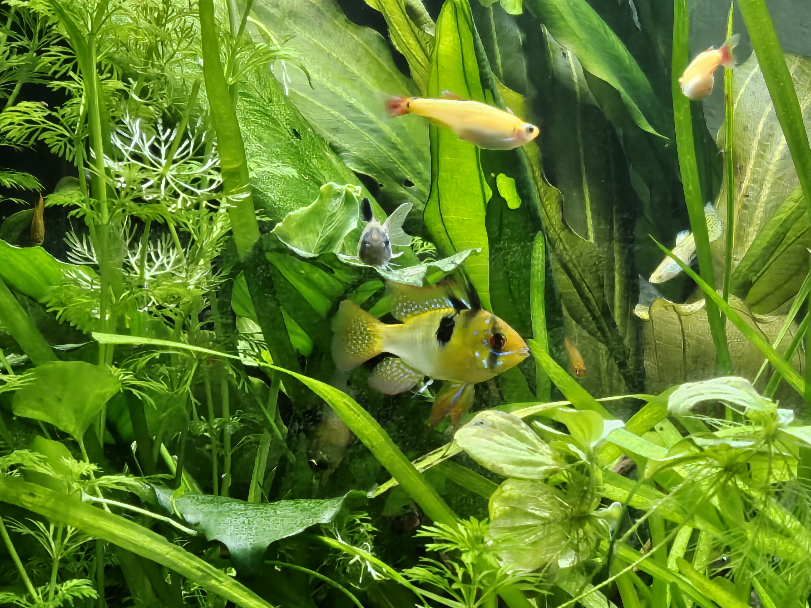

About us
Wir sind Ihre Ansprechpartner rund um die Aquaristik. Homeist ein Team aus 3 Aquaristik faszinierten Studenten. Unser Augenmerk liegt bei eigenen und deutschen Nachzuchten. Das Sortiment umfasst, Zierfische, Welse, Schnecken und Pflanzen. Wir achten auf die Qualit�t bei der Aufzucht und beim Versand. Sie werden von unseren gesunden und kräftigen Tieren begeistert sein. Kaufen Sie in unserem Aquaristik-Shop preiswert und sicher online ein. Bei Homewird der Service groß geschrieben. Wir garantieren Ihnen eine hohe Kompetenz und Fachwissen. Eine Beratung endet bei uns nicht mit dem Kauf. Natürlich können Sie sich jederzeit bei uns melden. Wir garantieren Ihnen beim Versand eine Lebendgarantie.
